1Primer inici
En obrir el programa per primera vegada, tria l'idioma i com vols començar:
- Començar en blanc: per a un establiment nou. És el que farem en aquesta guia.
- Començar amb un exemple: un bar d'exemple per tocar-ho tot sense por. Després ho pots esborrar a Ajustos.
- Importar les dades del Raconet: només surt si el programa troba el Raconet Gastronomia o el Xoriguer TPV en aquest ordinador.
- Obrir una còpia de seguretat: si ja tens un fitxer .json exportat.
💡 Tot es desa sol a cada canvi. No cal buscar cap botó de desar.
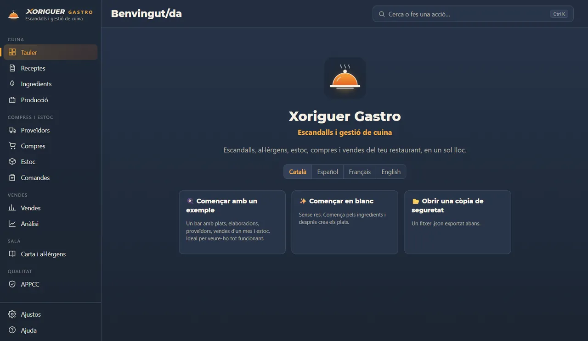
2Les dades del local
Ves a Ajustos i omple:
- Nom, adreça i telèfon: surten a la carta, les fitxes i les etiquetes.
- IVA per defecte (10 % en hostaleria) i la moneda.
- Marge objectiu per categoria: el marge brut que vols guanyar en tapes, entrepans, postres… El programa et dirà si cada plat hi arriba i quin preu caldria.
- Dies de conservació per defecte de les etiquetes de producció.
💡 Els marges es calculen sobre el preu sense IVA, que és el que de debò entra a caixa.
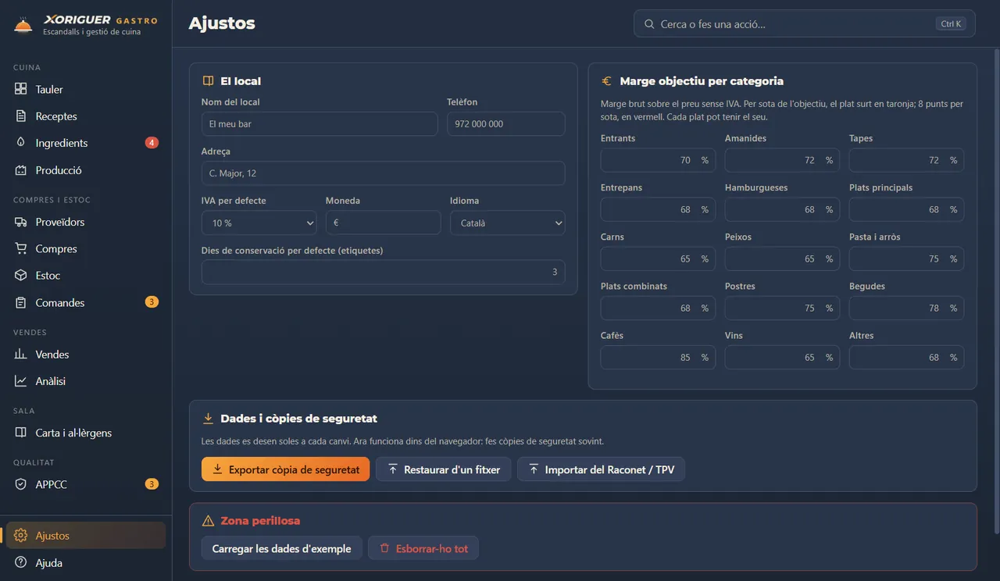
3Els proveïdors
A Proveïdors, crea'n un per a cada empresa que et serveix: nom, telèfon (per a WhatsApp), correu, persona de contacte, dies de repartiment i comanda mínima.
Després els assignaràs als ingredients i les comandes sortiran agrupades per proveïdor, a punt per enviar.
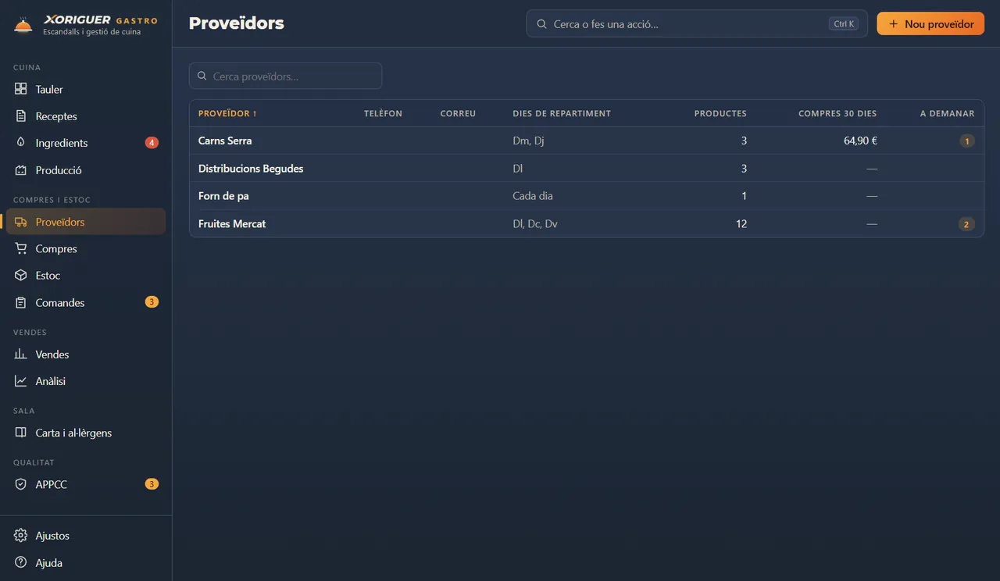
4Els ingredients: comença per la base
A Ingredients → Afegir de la base tens més de 120 productes habituals amb la família, el rendiment, els al·lèrgens, la nutrició i un preu orientatiu ja posats. Marca els que fas servir i prem Afegir.
- Els que ja tens surten en gris («ja el tens»), així no es dupliquen.
- També pots importar un CSV de la tarifa del proveïdor, o crear-los d'un en un amb Nou ingredient (o la tecla N).
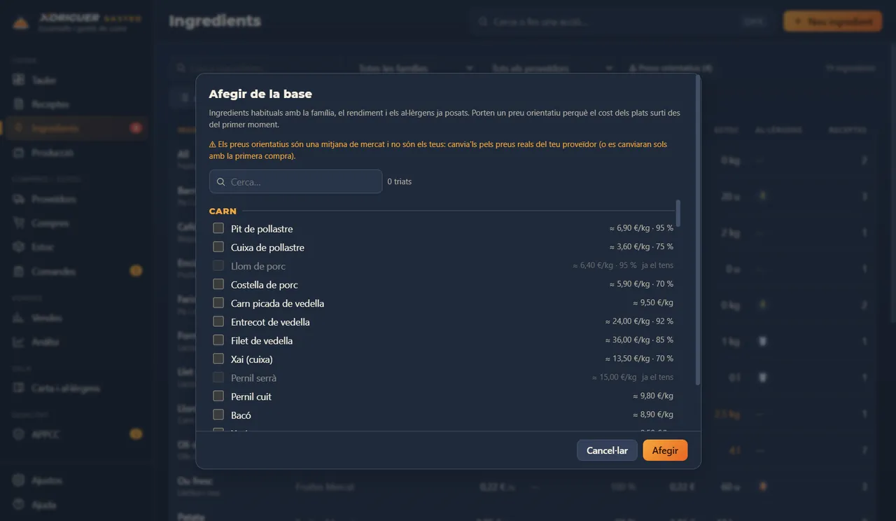
5Posa'ls el preu
Clica cada ingredient per obrir la fitxa a la dreta:
- Unitat i preu sense IVA (€/kg, €/l o €/unitat). Si compres per caixes, la calculadora de format ho passa a preu per kg.
- Rendiment: la part que aprofites després de netejar (patata ≈ 80 %, lluç ≈ 55 %). El preu real puja sol.
- Pes d'una peça (opcional): per posar «2 u» a les receptes d'un producte que compres a kg.
- Proveïdor, on es guarda (cambra, congelador…) i mínim/màxim d'estoc per a les comandes automàtiques.
- Preus per proveïdor: cada albarà hi guarda el preu; si un altre proveïdor és més barat, el tauler t'avisa.
💡 Els preus de la base són orientatius (una mitjana de mercat) i surten marcats en taronja amb l'etiqueta «orientatiu». Canvia'ls pels preus reals del teu proveïdor: amb el filtre ⚠ Preus orientatius de la llista els trobes tots. Si el preu ja és bo, prem El preu és correcte. La primera compra de cada producte també el canvia sol.
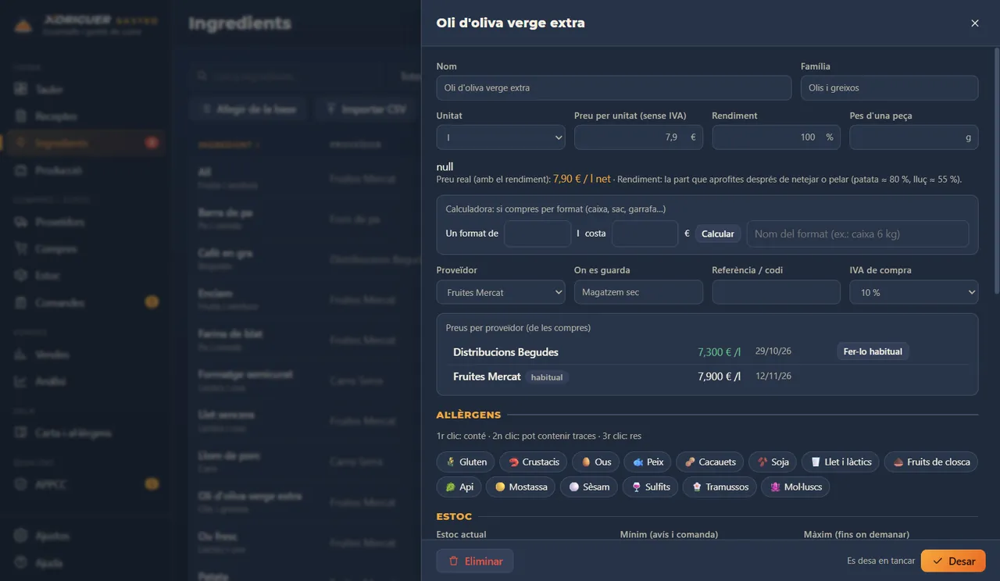
6Els plats: afegeix-los de la base
A Receptes → Afegir de la base hi ha uns 70 plats, elaboracions (salsa brava, allioli, beixamel, sofregit…) i articles de barra amb l'escandall per ració.
- Es fan servir els teus ingredients si ja els tens (encara que estiguin en un altre idioma) i es creen els que falten.
- Les elaboracions de dins s'afegeixen soles: si tries unes braves, també tindràs la salsa brava.
- El cost surt dels teus preus i es recalcula sol quan en canvies un, també dins de les elaboracions.
💡 Atenció: mentre els ingredients tinguin preu orientatiu, el plat surt marcat amb ≈ i un avís, i el seu cost i el seu marge no són reals. Posa els preus del teu proveïdor i tot es recalcula sol. Revisa també les quantitats i ajusta-les a les teves racions.
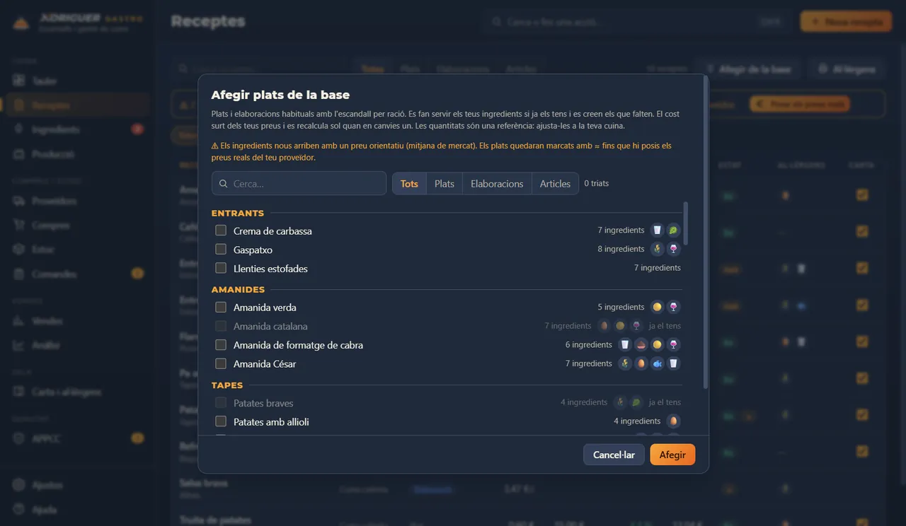
7L'escandall de cada plat
Obre un plat per veure i retocar l'escandall:
- Afegeix ingredients o elaboracions escrivint el nom; posa la quantitat per ració en qualsevol unitat (g, kg, ml, l, u). Si no existeix, el crees allà mateix.
- A baix tens el cost per ració, el food cost (verd: bé, taronja: just, vermell: baix) i el marge.
- Escriu el PVP amb IVA o prem el botó del PVP suggerit per arribar al marge objectiu.
- Mides de ració: tapa, mitja, doble… cadascuna amb el seu preu i el seu marge.
- Partida (cuina freda, calenta, fregidora, barra): ordena el full de producció.
- Pestanyes: Elaboració (passos, foto, descripció per a la carta), Al·lèrgens i nutrició (calculats sols) i Produir (escalar a N racions).
- Fitxa tècnica imprimible, amb costos o sense.
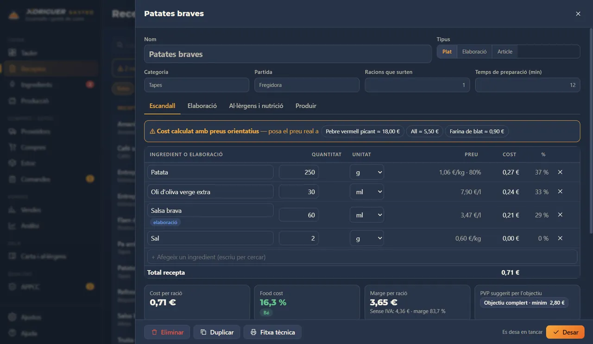
8La llista de receptes
La llista et dona d'un cop d'ull el cost, el PVP, el food cost, el marge, l'estat i els al·lèrgens de cada plat. Clica qualsevol columna per ordenar-la (per exemple, per food cost, per trobar els plats que menys deixen).
Filtra per plats, elaboracions o articles, i per categoria. La casella Carta decideix si el plat surt a la carta impresa i a la digital.
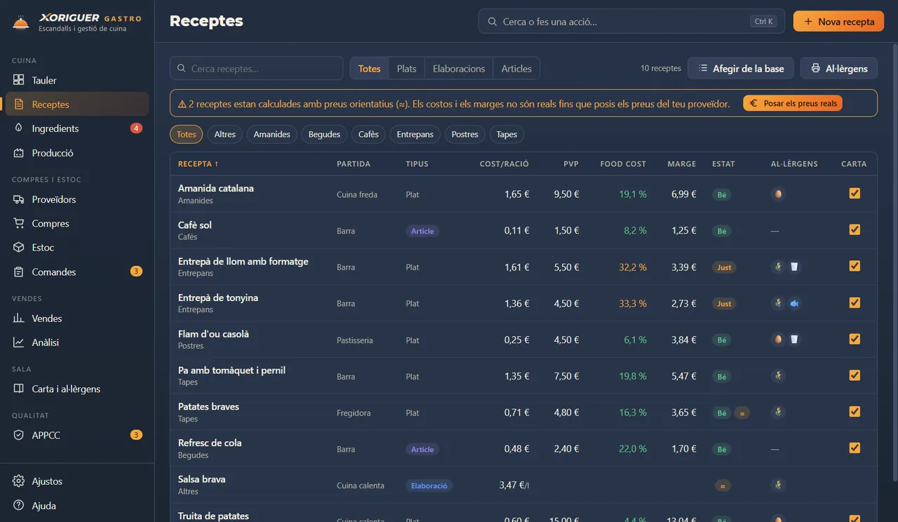
9El primer inventari
A Estoc → Fer inventari, compta el que tens i escriu-ho (amb Intro passes al següent). Pots ordenar-lo per zona (cambra, congelador, magatzem) per anar-hi caminant, o imprimir el full de recompte.
En desar, l'estoc queda com l'has comptat. Fes-ne un al començament i un altre al final de mes: a Anàlisi → Food cost real veuràs quant has gastat de veritat comparat amb el que diuen les receptes.
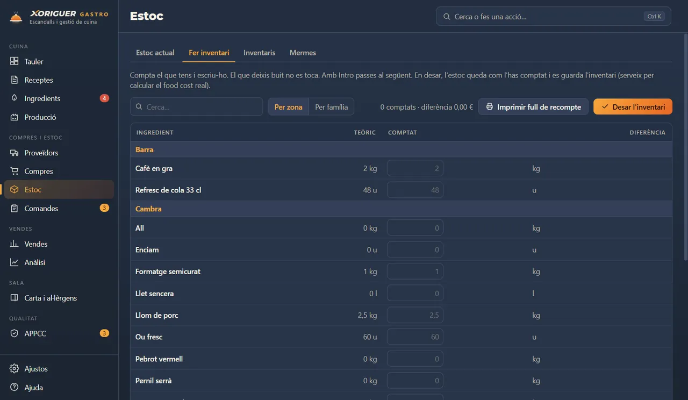
10Cada dia: les compres
Quan arriba un albarà, a Compres → Nova compra tria el proveïdor i escriu els productes, la quantitat i el preu.
- L'estoc puja sol i el preu de l'ingredient s'actualitza: tots els plats que el fan servir es recalculen.
- Si un preu puja, t'avisa amb el percentatge.
- Les factures sense productes (llum, lloguer) es poden apuntar només amb l'import, per al compte de resultats.
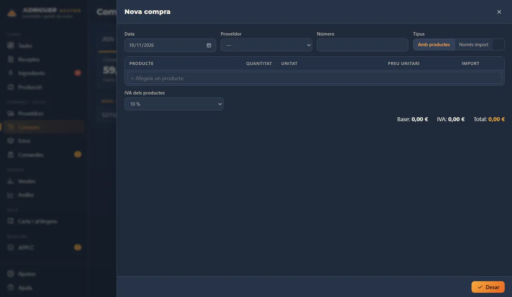
11Les comandes
A Comandes la llista es fa sola amb el que està per sota del mínim, agrupada per proveïdor. Retoca les quantitats, afegeix el que vulguis i envia-la per WhatsApp o correu amb un clic.
Quan arribi, prem Ha arribat → albarà i es converteix en una compra.
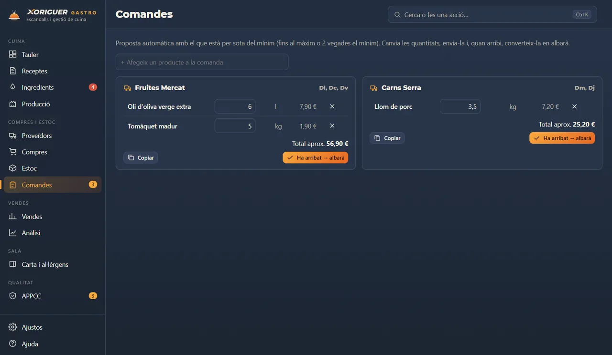
12Les vendes
A Vendes → Entrar vendes apunta les unitats venudes de cada plat (amb + i − o escrivint), o importa-les de Xoriguer TPV o d'un CSV de la teva caixa.
Les vendes descompten l'estoc segons les receptes (si tornes a desar el mateix dia, només es descompta la diferència) i alimenten totes les anàlisis.
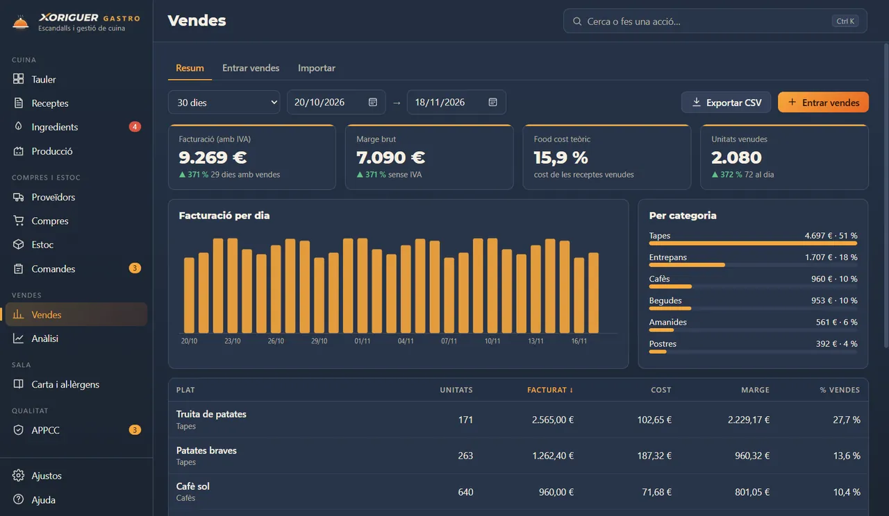
13La producció
A Producció tria què vols preparar i quantes racions (o omple-ho amb les vendes d'una setmana). Veuràs tot el que necessites, el que tens i el que falta, que pots enviar a la comanda amb un botó.
El full de producció imprès surt agrupat per partida, amb les quantitats de cada recepta ja escalades (mise en place).
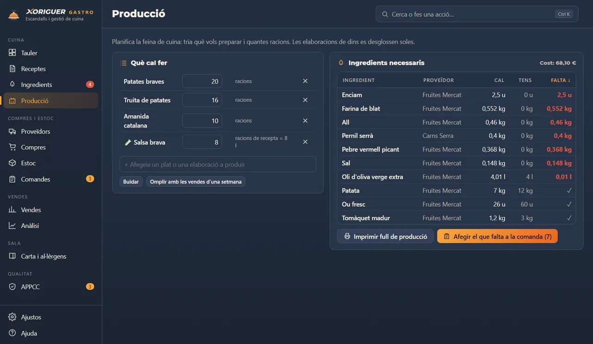
14El tauler
El Tauler és la pantalla d'inici: vendes de 7 dies, food cost teòric, marge brut i valor de l'estoc, el gràfic de 30 dies i els avisos: productes esgotats o per sota del mínim, pujades de preu, plats per sota del marge, ingredients sense preu, un proveïdor més barat, temperatures fora de rang…
Clica un avís per anar directament on cal actuar.
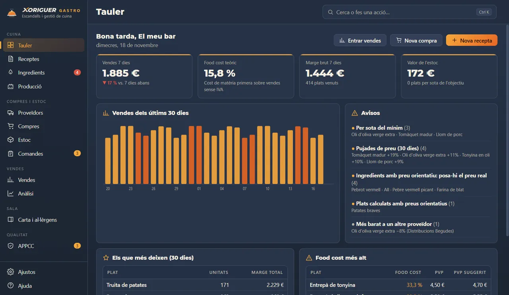
15Analitzar el negoci
A Anàlisi tens:
- Enginyeria de menú: cada plat és ⭐ estrella (es ven molt i deixa molt), 🐴 cavall de batalla, ❓ enigma o 🐶 gos, amb què fer amb cadascun.
- Food cost real entre dos inventaris, comparat amb el teòric: la diferència són mermes, racions massa grans o pèrdues.
- Evolució de preus i simulador («si l'oli puja un 20 %, quins plats perden marge i a quin preu els hauria de posar?»).
- Compte de resultats amb els costos fixos i el punt d'equilibri.
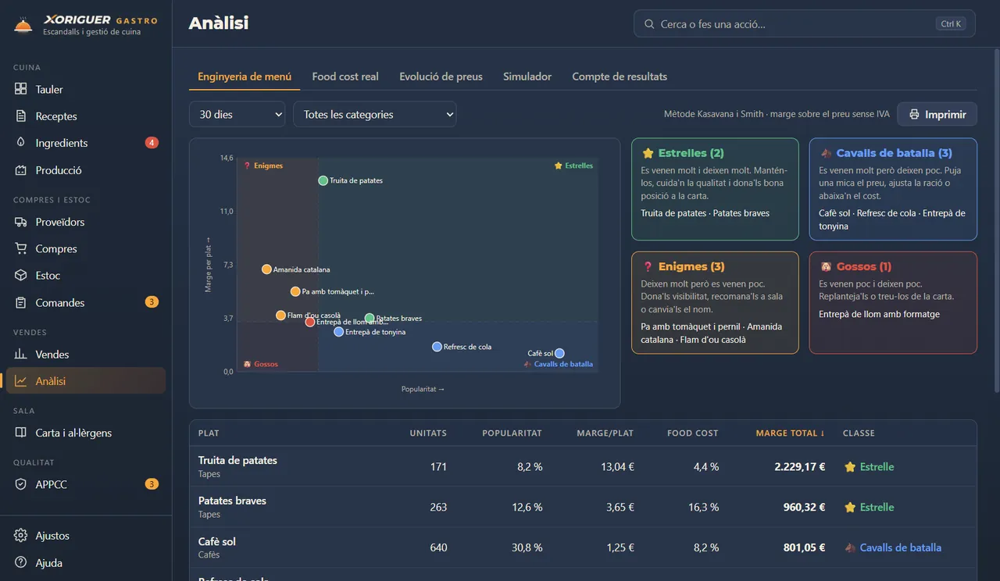
16La carta i els al·lèrgens
A Carta i al·lèrgens:
- Carta imprimible en tres estils (clàssic, modern, pissarra), amb al·lèrgens i descripcions.
- Matriu dels 14 al·lèrgens (Reglament UE 1169/2011), obligatòria i calculada sola de les receptes.
- Carta QR: desa la carta digital (una pàgina per al mòbil en 4 idiomes, amb filtre d'al·lèrgens), penja-la a la teva web i imprimeix les targetes QR per a les taules.
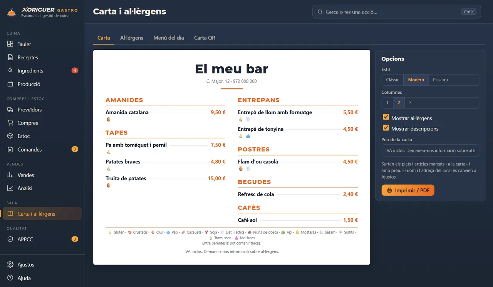
17El menú del dia
A Menú del dia escriu els primers, segons i postres (o tria'ls de les receptes) i el preu. Si el nom coincideix amb una recepta, el programa calcula el cost per comensal, el food cost, el marge i el preu suggerit.
Indica quants comensals esperes i prem Afegir a la producció: sabràs què preparar i què comprar. Imprimeix-lo per a la pissarra o les taules.
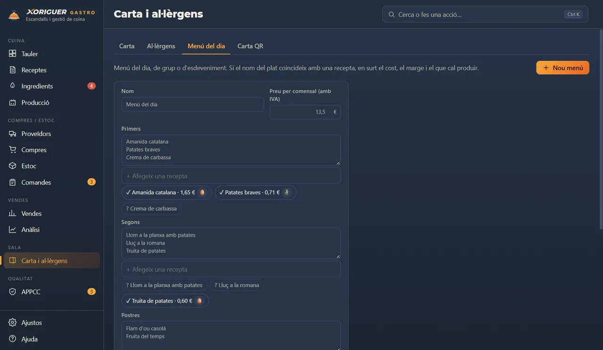
18L'APPCC
A APPCC registra cada dia les temperatures de neveres i congeladors (si està fora de rang, et demana l'acció correctora), imprimeix el registre del mes per a la inspecció i fes etiquetes de producció amb data, caducitat, lot i al·lèrgens.
A la pestanya Equips hi poses cada nevera amb el seu rang correcte.
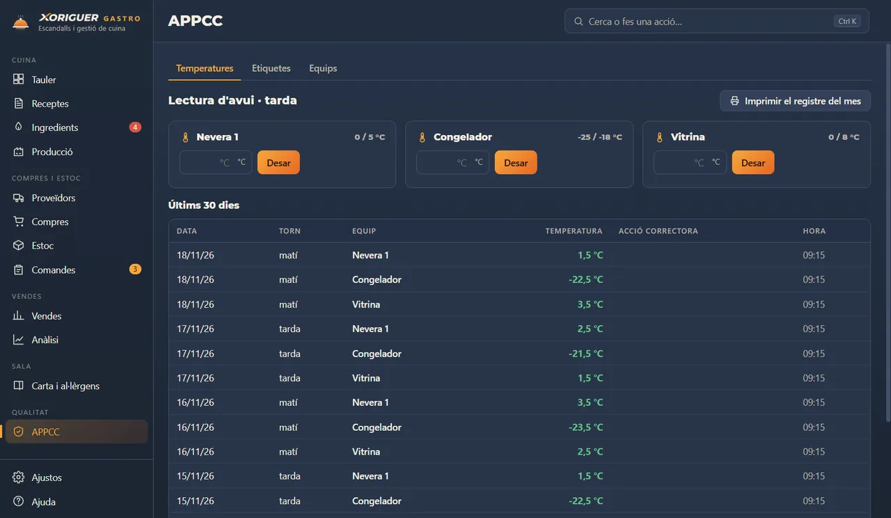
19Trucs per anar de pressa
- Ctrl + K: cerca qualsevol plat, ingredient o proveïdor, o fes una acció («fer inventari», «nova compra»…).
- N: crea un element nou a la pantalla on ets. /: va al cercador.
- Ctrl + Z: desfà l'últim canvi (també des de l'avís de baix a la dreta).
- Ctrl + 1…9: canvia de pantalla. Esc: tanca el panell.
- Les dades són a %APPDATA%\XoriguerGastro amb una còpia automàtica cada dia (30 dies). A Ajustos pots exportar-ne una o restaurar-la.
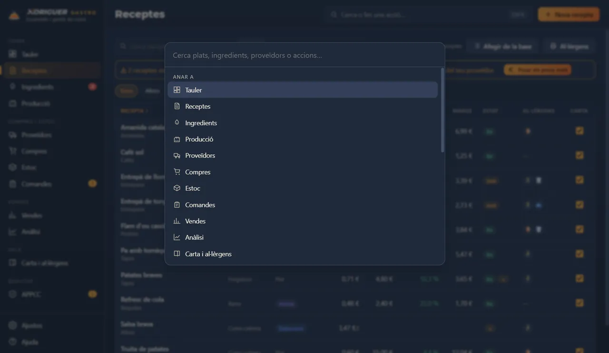
✓Llista de comprovació
- Nom, adreça, IVA i marges objectiu a Ajustos
- Proveïdors creats
- Ingredients afegits de la base o d'un CSV, amb preu, proveïdor i estoc mínim
- Plats afegits de la base o creats, amb les quantitats revisades i el PVP
- Al·lèrgens revisats (matriu impresa a la vista dels clients)
- Primer inventari fet
- Neveres i congeladors donats d'alta a l'APPCC
- Carta impresa i/o carta digital amb QR a les taules